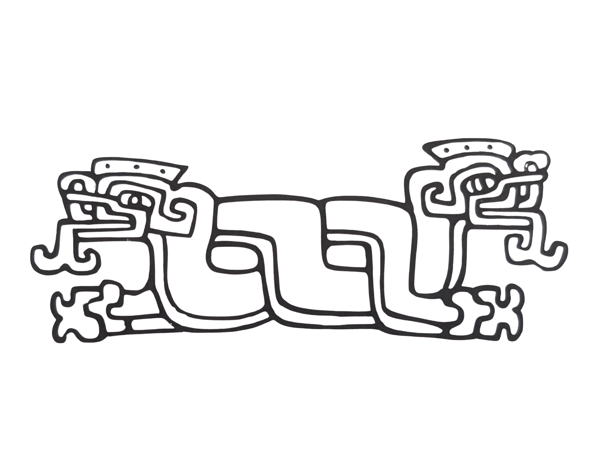
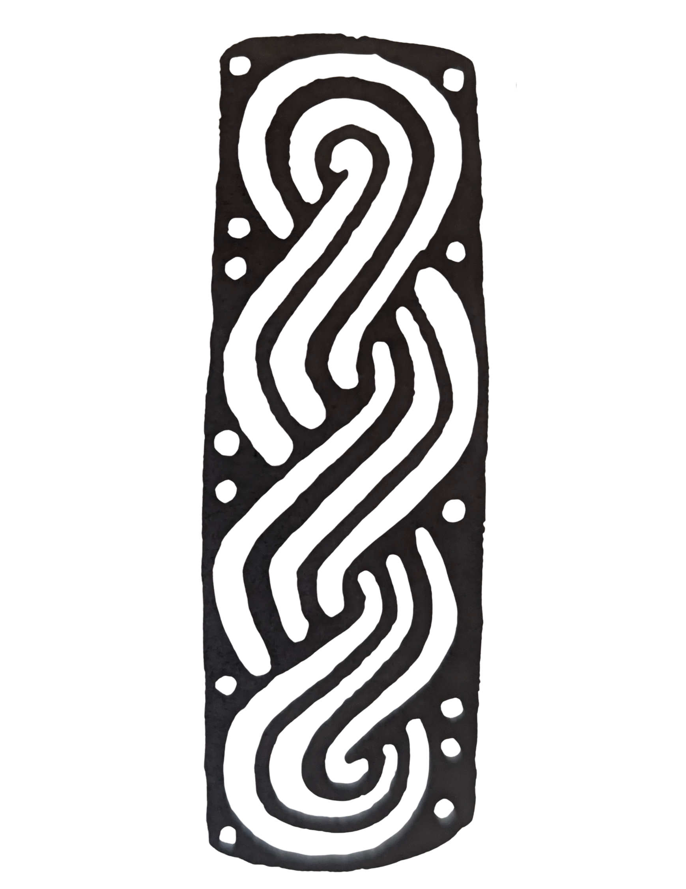

Every Monday & Thursday, all are welcome to learn traditional Mexica dance alongside our group.
Join UsBring our dances, music, and stories to your school, festival, or community celebration.
Book UsJoin us every year to honor our ancestors through dance, song, and remembrance.
Learn More